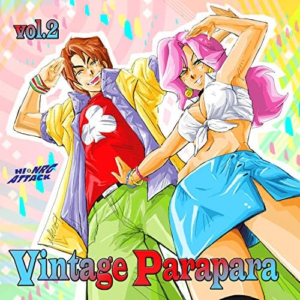

Eurobeat only
Almost the entire canon comes from a handful of Italian labels producing for the Japanese market.
A synchronised arm dance built on top of Eurobeat, performed standing almost still from the waist down.

Para Para grew out of Tokyo disco culture and settled into the juliana and gyaru club scenes of the 1990s. The music is Eurobeat — fast, major-key Italian dance records exported to Japan almost exclusively for this purpose — and every track has its own fixed choreography that the whole floor performs at once.
The signature is that the legs barely move. Everything happens above the belt: sharp arm positions hit on the beat, elbows and wrists doing the work that footwork does in most other club dances. A room of two hundred people hitting the same angle at the same instant is the entire point.
Because the routines are fixed and published, Para Para is learnable from a video and portable to any floor. That made it survive three or four revival waves, most visibly the late-1990s boom around Tokyo's Velfarre club, and again through arcade rhythm games that borrowed its vocabulary.
Everyone does the same thing, on the same beat, and knowing the routine is the price of admission.
Almost the entire canon comes from a handful of Italian labels producing for the Japanese market.
Each song has one official choreography. Improvisation is not the game here; unison is.
Footwork is minimal by design, which is why it works in a packed club with no room to move.